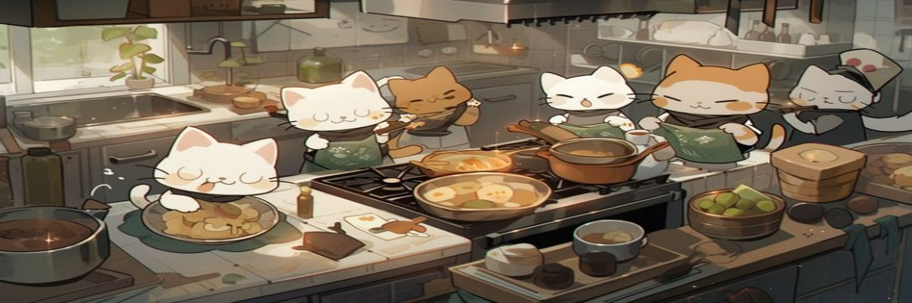

.jpeg)
.jpeg)

Disfruta del mejor café acompañado de nuestros adorables amigos felinos. Relájate, lee un libro y pasa un momento inolvidable.
Visítanos
Los gatos son criaturas fascinantes que han acompañado al ser humano durante siglos, aportando no solo compañía, sino también un aire de misterio y elegancia. Conocidos por su carácter independiente y su espíritu juguetón, los gatos son animales que combinan perfectamente la gracia de un cazador con la ternura de un amigo fiel. Estos pequeños felinos domésticos poseen habilidades únicas, como una agilidad extraordinaria, visión nocturna perfecta y un oído agudo que les permite detectar el más mínimo ruido. Aunque suelen dormir hasta 16 horas al día, cuando están despiertos, son increíblemente activos y curiosos, explorando su entorno con gran entusiasmo. Además de ser mascotas encantadoras, los gatos tienen un impacto positivo en nuestra salud mental. Estudios han demostrado que acariciar a un gato puede reducir los niveles de estrés y ansiedad, promoviendo una sensación de calma y felicidad. Su ronroneo, ese sonido suave y relajante, no solo es una muestra de su satisfacción, sino que también tiene propiedades terapéuticas para los humanos. En muchas culturas, los gatos han sido venerados como símbolos de buena suerte, protección y sabiduría. Desde el Antiguo Egipto, donde se les adoraba como deidades, hasta nuestros días, los gatos han mantenido un lugar especial en nuestros corazones y hogares. Si alguna vez has tenido la fortuna de compartir tu vida con un gato, sabrás que cada uno tiene una personalidad única. Algunos son juguetones y enérgicos, mientras que otros prefieren pasar el día descansando en un rincón soleado. Pero todos tienen algo en común: saben cómo convertir cualquier momento en uno especial y lleno de amor.

"Un café sin un gato es como un día sin sol."